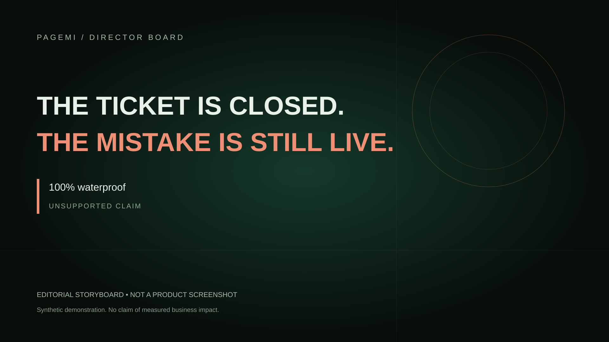
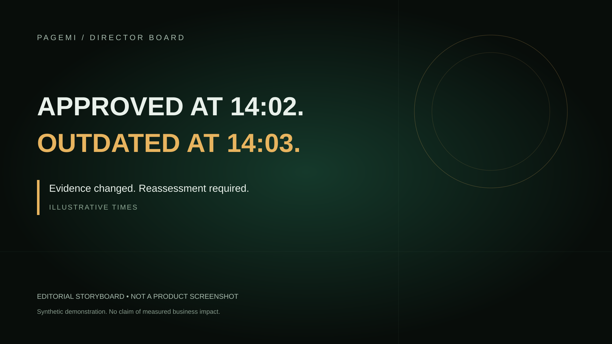
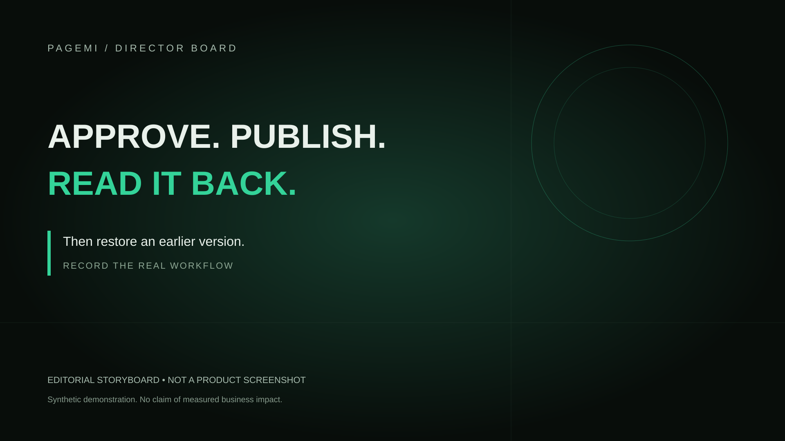
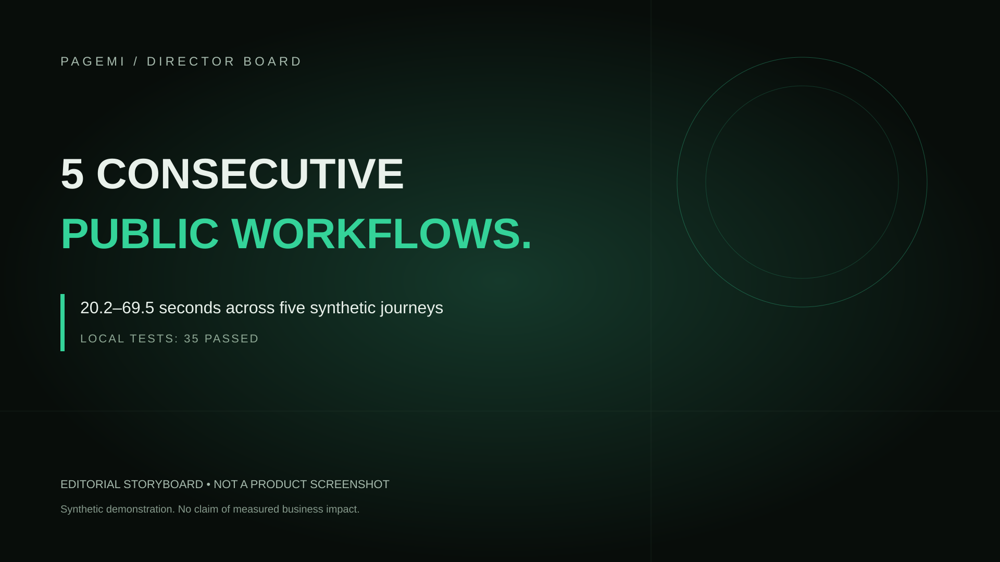
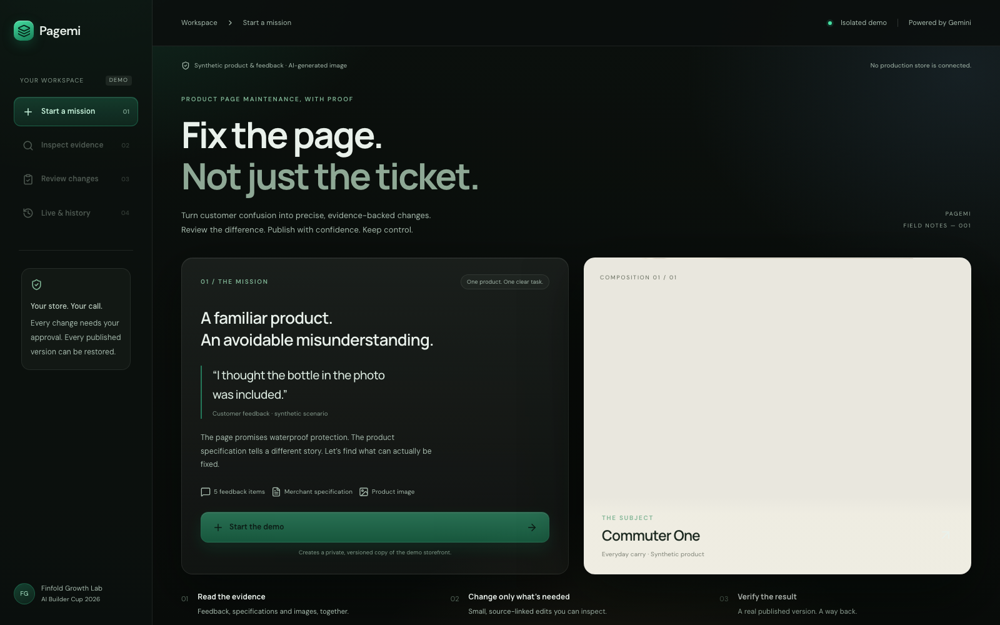
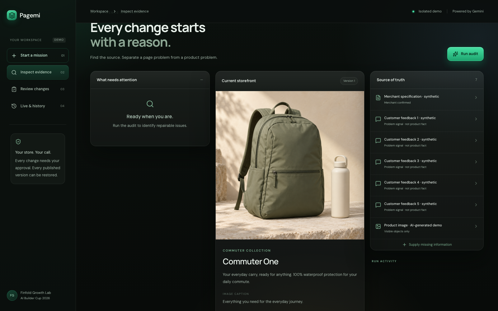

AI BUILDER CUP / 195 SECONDS / DIRECTOR HANDOFF
The ticket is closed.
The mistake is still live.
开场像一场正在发生的失误。主体让评委亲眼看到，错误如何经过证据、人审和版本控制得到修复。
这是导演方案，不是成片。下面的构图为概念包装；三张产品画面来自当前线上版本，但尚未运行审查。需要补录真实模型、批准失效、发布与回滚。
Opus 接力入口 · 逐镜脚本 · 拍摄清单 · 时间轴
六个记忆点

THE TICKET IS CLOSED. THE MISTAKE IS STILL LIVE.A PHOTO IS NOT A PERFORMANCE TEST.
APPROVED AT 14:02. OUTDATED AT 14:03.
APPROVE. PUBLISH. READ IT BACK.
5 CONSECUTIVE PUBLIC WORKFLOWS.FIX THE PAGE. NOT JUST THE TICKET.当前线上画面
2026-10-18现场截图，无额外模型调用。使用原图的裁切与放大来引导视线，不重新绘制实际产品结果。

01-live-start.png · current live UI, before audit
02-live-before-audit.png · current live UI, before audit03-live-specification.png · current live UI, before audit195秒主时间轴
0:00–0:05The mistake is still live.
概念开场：占画面三分之一的工单落下 Resolved 印章并抽走，露出背后的 100% waterproof。1.2秒停顿，然后切到仍亮着的错误承诺。右下小字 Illustrative scenario。
The ticket is closed. The mistake is still live.
0:05–0:13One page. Two misunderstandings.
实物感背包大图，细线框住水瓶；切成原页面承诺与商家规格对照。轻微推近，禁止伪造商品浸水试验。
The bottle looks included. The page promises waterproof protection. The specification says otherwise.
0:13–0:24Pagemi
3D包装快速压平为真实首页，1秒品牌落版后进入全屏桌面工作台。屏幕角落持续保留 Synthetic demo。
Pagemi turns customer confusion into evidence-linked page repairs. Here is the working prototype, running on Google Cloud.
0:24–0:42Read the evidence.
真实点击来源，放大规格关键句4秒，再看图片。Run audit实际点击与返回必须录到；如缩短等待，明确标 Analysis wait shortened。
Gemini reads feedback, merchant specifications, and the product image. Feedback identifies a problem. The specification supports product facts. An image can show a bottle, but cannot prove waterproof performance.
0:42–1:00Repair, ask, or hand off.
三项实际问题依次选中，各停3–4秒，红色过度声明、琥珀色缺资料、灰色人工处理。不要给每条反馈都闪绿色勾。
The agent separates page problems from missing information and operational issues. It corrects the unsupported waterproof claim, asks for laptop dimensions, and leaves a broken zipper or late delivery for human action.
1:00–1:19Every change has a source.
真实前后差异与来源并排；将不支持的 waterproof 词组与受支持文字进行匹配剪辑。其余界面不扭曲。批准前保留人审复选框。
Each proposed change shows its source. A separate Gemini request checks the replacement text. Program rules restrict edits to three fields. Price, inventory, policies, and certifications stay outside the editing scope.
1:19–1:38New evidence. Old approval expires.
第一次真正批准之后补充规格。特写实际 Outdated 状态；外层批准连接线从绿变琥珀并断开。静止2秒让评委理解。
Approval applies to exact wording and exact evidence. When the merchant adds a new specification, that approval becomes outdated. The application requires a fresh assessment before publication.
1:38–1:56Dimensions, without an invented promise.
录入32×23×3厘米的合成商家规格并重审。只有真实返回安全尺寸建议才展示成功；保留尺寸提示和未保证通用兼容的措辞。
We add measured sleeve dimensions. A new assessment can disclose those measurements and ask customers to check their device. Dimensions alone do not guarantee that every sixteen-inch laptop fits.
1:56–2:18Approve. Publish. Read it back.
至少12秒连续真实操作：勾选、批准、发布、打开页面、刷新、复查。其余6–10秒特写变更文字和实际版本；剪辑不能省略授权顺序。
Now the merchant reviews and approves the new text. Publication creates a persistent page version. We open the storefront, refresh it, and read the published result back. Writing succeeded and content verification are separate checks.
2:18–2:34A way back.
真实点击恢复和刷新，旧措辞重新出现，新版本号递增。严禁用倒放页面切换假装回滚。
If a change needs to be reversed, the merchant restores an earlier page. Restoration creates another recorded version. The history remains visible, and the restored content can be checked again.
2:34–2:53Tested. With limits visible.
5条真实耗时线依次出现34.8、69.5、29.2、20.2、30.9秒；下方常驻 Synthetic tests。展示早前504失败且无可批准补丁。禁止标100% accuracy。
The release passed five consecutive public workflows and thirty-five local tests. The five journeys took twenty to sixty-nine seconds. Earlier revisions had timeout failures. Human accuracy grading and merchant testing are still pending.
2:53–3:05Google AI, controlled execution.
简洁四节点架构。商家批准位于模型和发布之间。模型到发布之间不画直连箭头。文字足够大，不展示密钥或云账单。
Gemini runs through Vertex AI. Cloud Run serves the application, Firestore records versions, and private Cloud Storage holds uploaded images. The model has no publishing tool.
3:05–3:15Fix the page. Not just the ticket.
回到开场同一构图，错误承诺已被真实批准后的文字替代；最后6秒定格品牌、Google Cloud服务文字和短仓库链接，按钮感入口只作落版。
Our next test is with merchants: can they make accurate repairs with less effort? Pagemi. Fix the page. Not just the ticket.
最后的判断
让观众记住“批准也会过期”和“发布后必须读回来”。视觉可以有戏剧性，产品结果必须有证据。当前表单要求3–4分钟，主版3:15；公开FAQ仍冲突，保留2:55备用剪辑点。